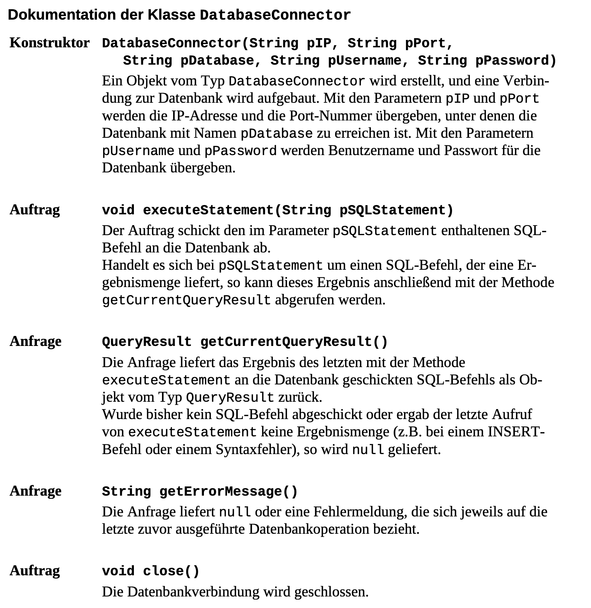
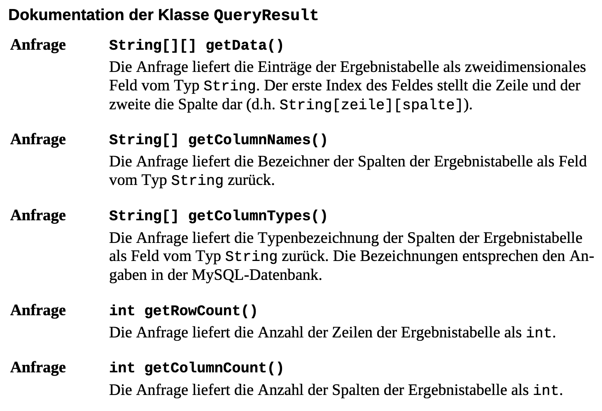

Zentral Abitur Klassen (DatabaseConnector, QueryResult)
Eine Datenbank kann mit den beiden Zentralabiturklassen DatabaseConnector und QueryResult angebunden werden:


-
mit den
Befehlen
import mysql.DatabaseConnector;
import mysql.QueryResult;
werden die benötigten
Klassen
zur Verfügung gestellt.
-
mit dem
Befehl
DatabaseConnector
datenbank
= new DatabaseConnector ("10.16.1.6", 3306, "
terra1
", "infolk", "infolk");
wird eine Verbindung zur
Datenbank
"
terra1
" auf unserem Server aufgebaut.
-
mit dem
Befehl
datenbank
.executeStatement ( "
SELECT * FROM land
");
wird die
SQL-Anweisung
zur Datenbank geschickt und dort
aufgeführt
.
Achtung: Will man " als Teil des Strings einbinden, so muss \" verwendet werden.
Bsp:
"
SELECT * FROM land WHERE Kontinent =
\"
Europa
\"
"
-
mit dem
Befehl
QueryResult
result
=
datenbank
.getCurrentQueryResult();
wird das
Ergebnis
der SQL-Abfrage (eine Tabelle) als Objekt der Klasse
QueryResult
von der Datenbank geholt. Mit der Variablen
result
kann auf dieses
Ergebnisobjekt
zugegriffen werden.
Achtung
: Das
Ergebnisobjekt
liefert mit der Methode getData() ein
zweidimensionales Array
. Der erste Index steht für die einzelnen Datensätze, also die Zeilen der Ergebnistabelle. Der zweite Index steht für die Spalten der Ergebnistabelle.
-
mit dem
Befehl
result
.getData() [
zeile
] [
spalte
]
kann auf einen
konkreten Eintrag
in der Tabelle zugegriffen werden.
Um eine Zeile oder die ganze Tabelle auszugeben werden daher Zählschleifen benötigt.